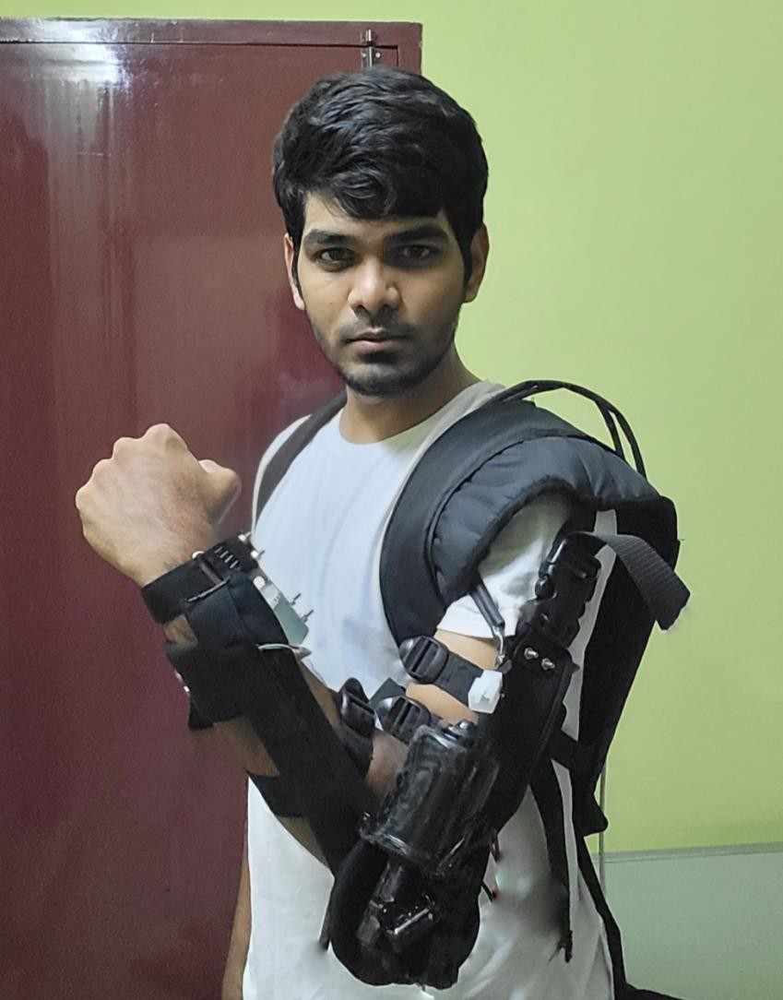
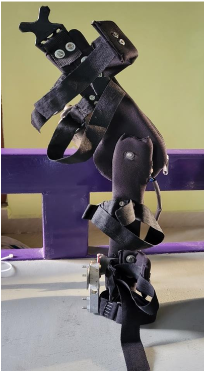
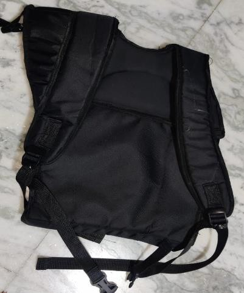
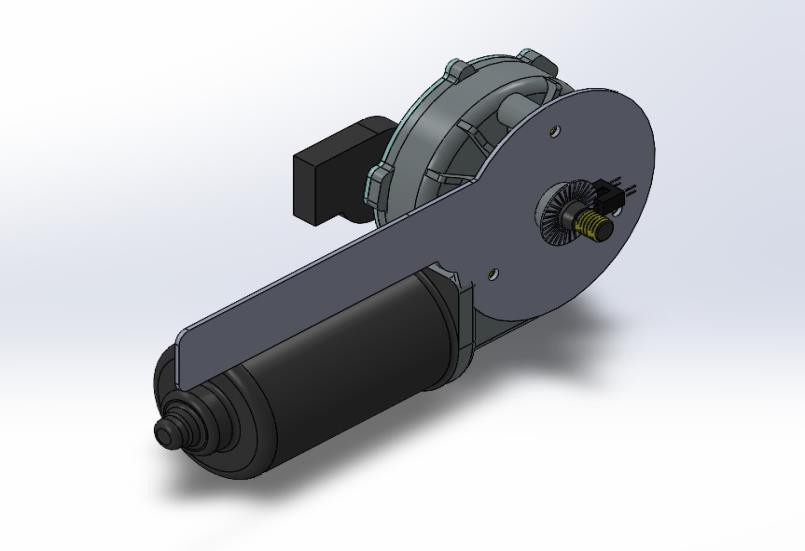

Motion Assist Arm is a wearable arm support that reads the signals your own muscles make when you decide to move. When you lift, it helps. When you rest, it stays out of the way. The result is movement that feels like yours, with less effort.

Every movement begins with a small electrical signal in your muscle, called EMG. Soft sensor patches on the skin pick it up, so the arm knows you are about to move before you strain. You do not press a button or push a lever. You just move.
You decide to move. The muscle signals it.
Soft patches notice the muscle activity.
The arm helps you lift and lower.
Slip on the shoulder rest and strap the arm frame to your arm. Adjust the straps until it sits comfortably.
The sensor patches rest on the skin over the muscle you use to lift.
Lift, hold, lower. The arm follows your intention and takes part of the effort.



Lifting and repetitive tasks tire the arm. The assist takes some of that effort so the day feels lighter.
Because it responds to your own muscle, it supports movement you are already trying to make, helping you keep independence.
Responds to your own muscle activity, no buttons.
Assist starts when you intend to move.
Shares the effort of lifting with your arm.
Spreads the load across your shoulders.
Straps and cuffs adjust to different arms.
Padded cuffs where the frame meets your arm.
Move around, not tied to a bench or a machine.
Useful in physical jobs and in rehabilitation.
Strong metal frame that holds its shape.